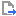

| Constellation Action | Keyboard Shortcut | User Action | Menu Icon |
|---|---|---|---|
| Export to PNG | File -> Export -> To Image... | ||
| Export to JSON | File -> Export -> To JSON... | ||
| Export to GeoJSON | File -> Export -> To GeoJSON... | ||
| Export to GeoPackage | File -> Export -> To GeoPackage... | ||
| Export to Shapefile | File -> Export -> To Shapefile... | ||
| Export to KML | File -> Export -> To KML... |  |
Constellation provides a number of options for exporting a graph. Some of these will present dialog boxes and details on those are further down this page:
Constellation also provides options to export to CSV and Excel (XLSX) via the Table View. Refer here for details.